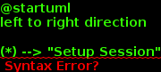
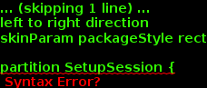
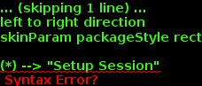
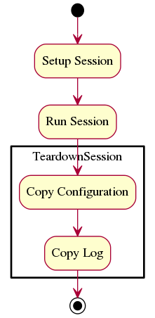

APETools
2014.09.18
Site
User Documentation
Developer Documentation
The BaseClass
The Log Setter
The Main Module
All-in-one Performance Evaluation Tools
Affectors
Builders
Commands
Commons
Connections
Devices
Informants
Lexicographers
Operations
Parameters
Parsers
Pipes
Proletarians
Threads
Tools
Watchers
Page
Activity Diagrams
System Level
Setup Session
Parse Configuration
Build Components
Run Session
Setup Test
Run Test
Teardown Session
Source
Activity Diagrams
¶
System Level
¶

Setup Session
¶

Parse Configuration
¶
Build Components
¶
Run Session
¶

Setup Test
¶
Run Test
¶
Teardown Session
¶

![skinParam packageStyle rect
partition SetupSession {
(*) --> [args.glob] "Translate Configuration File"
"Translate Configuration File" --> [configuration parameters] "Build Components"
"Build Components" --> ===B1===
===B1=== --> [parameters.dut] "Build DUT Connection"
"Build DUT Connection" --> [DUT Connection] ===B2===
===B1=== --> [parameters.tpc] "Build TPC Connection"
"Build TPC Connection" --> [TPC Connection] ===B2===
===B1=== --> [parameters] "Build Test Parameters"
"Build Test Parameters" --> [test_parameters] ===B3===
===B2=== --> [parameters.directions] "Build Iperf Tests"
"Build Iperf Tests" --> [IperfTests] ===B3===
===B3=== --> "Build Test Operators"
}
"Build Test Operators" --> [Test Operators] "Run Session"](../../../../_images/plantuml-04c251505c35391218253443ced9ca6e7faec5bd.png)
![skinParam packageStyle rect
(*) --> "Setup Session"
"Setup Session" --> [parameters] "Setup Test"
partition RunTest {
"Setup Test" --> "Kill All Iperf Processes"
"Kill All Iperf Processes" --> ===B1===
===B1=== --> [parameters.IperfServerParameters] "Start Iperf Server"
===B1=== --> [parameters.time_to_recover] "Wait"
"Wait" --> [parameters.IperfClientParameters] "Run Iperf Client"
"Run Iperf Client" --> ===B2===
"Start Iperf Server" --> ===B2===
}
===B2=== --> "Teardown Session"
"Teardown Session" --> (*)](../../../../_images/plantuml-49fb18c3b4bab020a75476a1c6bf9349f59b5ff6.png)